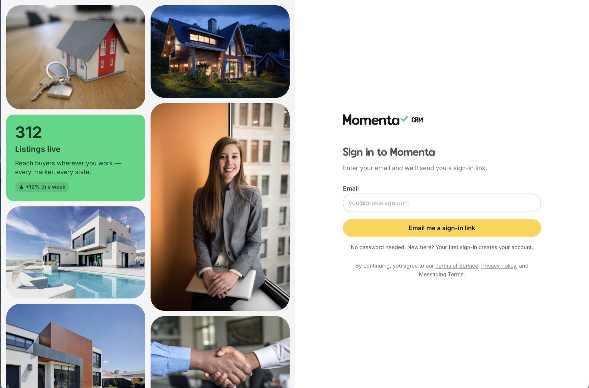
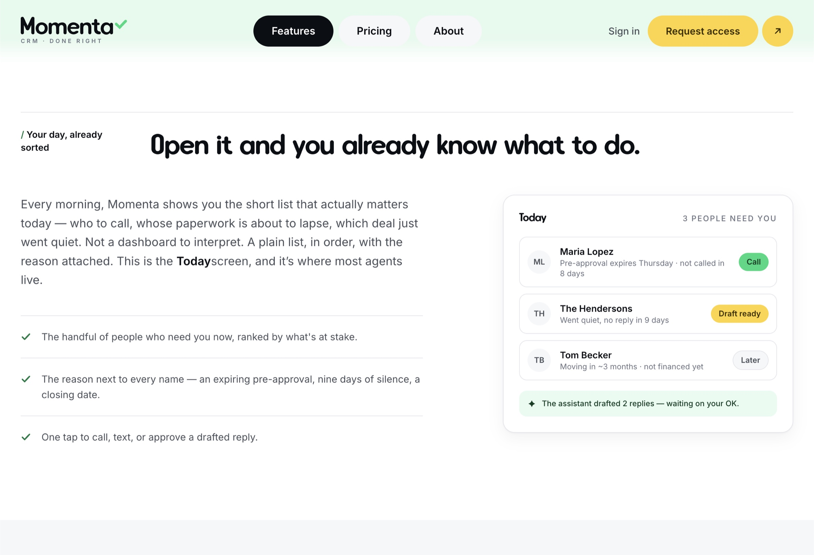
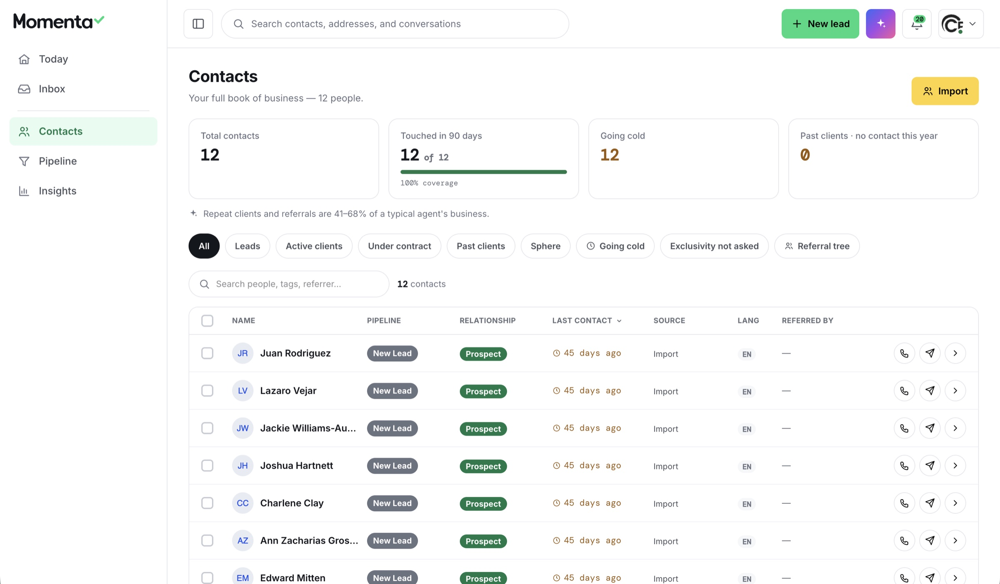
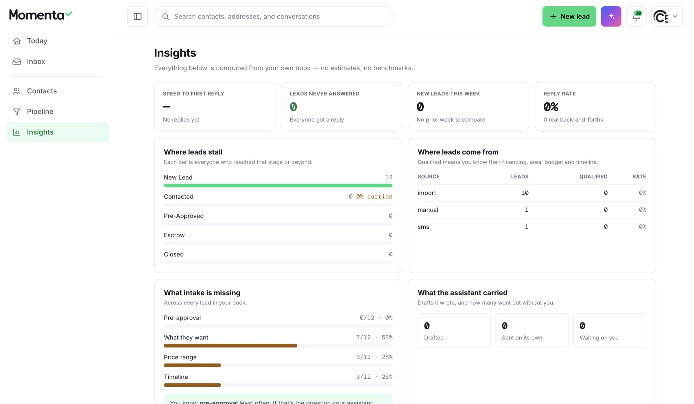
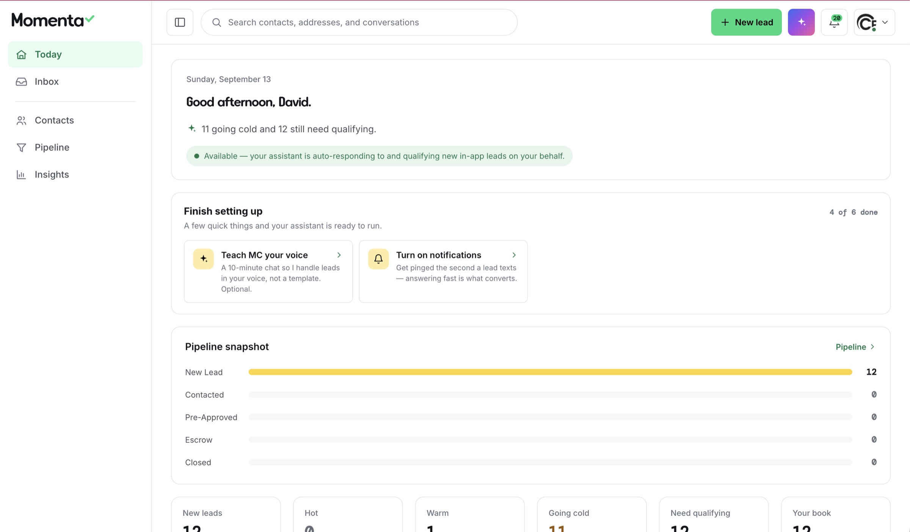

Most agents don't lose deals to bad marketing — they lose them to follow-up they can't keep in their head. Momenta turns that into a short, ranked daily list: who to call, whose paperwork is about to lapse, which deal just went quiet — each with the reason attached, and a drafted reply waiting on the agent's OK.

Passwordless from the first screen — a magic-link sign-in where the first login creates the account. One less credential for an agent to manage, and a bilingual door into a bilingual book of business.
Agents don't need another database to update. They need to know who to talk to next — and why.
A real-estate business runs on relationships and timing: a pre-approval about to expire, a buyer who went quiet, a past client due for a check-in, a new lead that texted at 9pm and needed an answer at 9:01. Most of that lives in an agent's head, their phone, and a spreadsheet they never keep current.
Traditional CRMs ask the agent to feed the system so the system can report back. Momenta inverts that: the system watches the book, notices what's slipping, prepares the next move, and asks the agent only to decide.

Not a dashboard to interpret — a plain list, in order, with the reason next to every name: an expiring pre-approval, nine days of silence, a closing date. Open it and you already know what to do.
The question wasn't “how do we build a better CRM?” It was: what would a system have to know, and be trusted to do, so that an agent never loses a relationship to a missed follow-up?
A CRM you don't have to update — it tells you who needs you, and why, and has the reply ready.
The assistant learns the agent's voice from a short conversation, not a template — so the drafts it prepares sound like the person sending them.

The whole book in one place — pipeline stage, relationship, last contact, source, language, and who referred whom. Repeat clients and referrals are where the business actually lives, so the model is built around the relationship, not the transaction.
Momenta sends real SMS and can place real calls — which means sending is a checkpoint, not a background job. The assistant drafts; the agent approves. Every message is tracked as one of three states: drafted, sent on its own, or waiting on you — so it's always clear what went out, and what didn't.
The insights are computed from the agent's own book — no estimates, no benchmarks. Where a number can't be known, the interface says so rather than inventing one. Trust comes from showing the work, not from a confident-looking chart.

Insights, computed from the agent's own book — where leads stall, what intake is missing, and exactly what the assistant drafted, sent, or is holding for approval. No estimates, no benchmarks.

The Today screen opens on what's at stake — how many leads are going cold, how many still need qualifying — while the assistant auto-responds to and qualifies new leads, and hands the agent the decisions that need a person.
Agent experience over data entry. The product organizes around the next decision, not around forms the agent has to keep current.
Conversation as the interface. Qualification, follow-up, and voice all happen through real messages — an agent-authored playbook, not a canned drip.
Communication with a send gate. The system can reach real people, so approval is a first-class product state — capability and authority are separate decisions.
Honest numbers. Insights are computed from the agent's own data, and unknowns stay unknown — the same trust principle that runs through everything I design.
Momenta and M Social are two faces of the same idea: intent should guide the work, context must persist, and the human owns anything a stranger will receive. Where M Social decides what a brand should publish, Momenta decides who an agent should talk to next — both keep the person on the send button.